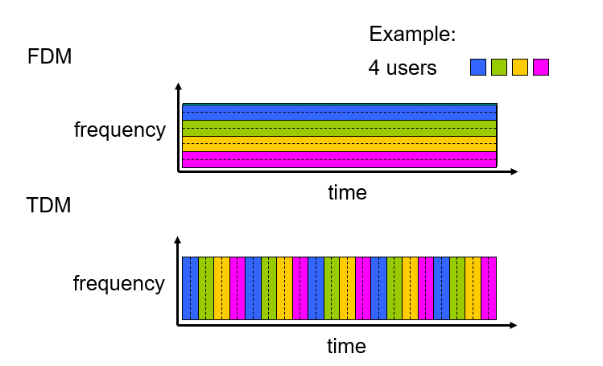
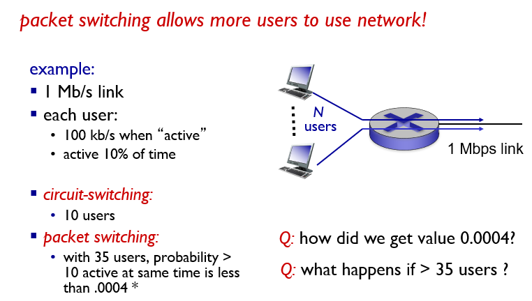
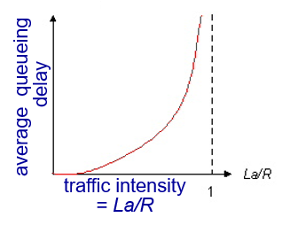
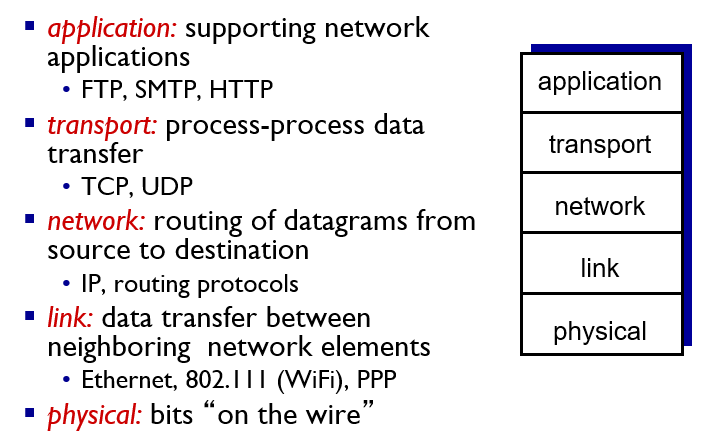
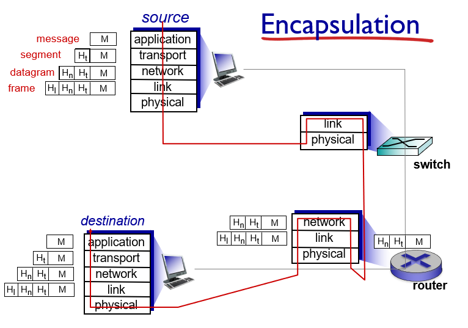

[计算机网络_自顶向下]:计算机与因特网
计算机网络与因特网
一、什么是因特网
因特网有以下两种描述方式
- 具体构成描述
- 服务描述
1.具体构成描述
因特网是一个互联了全世界数十亿计算机设备的网络
基本术语:
主机/端系统:手机、电脑、电视等一切与因特网相连的终端设备
通信链路:网络中两个节点之间的物理通道称为通信链路。通信链路的传输介质主要有双绞线、光纤和微波
分组交换机
- 分组交换机从它的一条入通信线路接受到达的分组，并从它的一条出通信链路转发该分组
- 当今最常见的分组交换机有路由器和链路层交换机两种
路径:从发送端到接收端，一个分组所经历的一系列通信链路和分组交换机
ISP(因特网服务提供商/Internet Service Provider)
- 端系统通过ISP接入因特网
- 每个ISP本身就是由多台交换机和通信链路组成的通信网络
- ISP分层级，较低层的ISP通过较高层的ISP完成互联
协议
- 端系统，交换机和其他因特网部件都要通过运行一系列协议控制因特网中信息的接受与发入
- TCP(Transmition Controal Protocal):传输控制协议
- IP(Internet Protocol):网际协议
RFC(Request for comment):因特网协议标准文档
2.服务描述
因特网是为应用程序提供服务的基础设施
基本术语：
分布式应用程序:运行在端系统上的应用程序
套接字接口
运行在不同端系统上应用程序之间发送数据必须得遵循一套规则，因特网套接字接口就是这样的一套规则集合
3.协议
协议定义了两个或多个通信实体之间交换的报文的格式和顺序，以及报文发送或接收一条报文或其他时间所采取的的动作
二、网络边缘
主机与端系统均位于端系统的边缘，主机又可以细分为客户和服务器
1.接入网
指将端系统连接到其边缘路由器的网络
家庭接入:DSL,电缆，FTTH，拨号和卫星
DSL(Digital Subscriber line)
DSL即数字用户线，住户从提供本地电话接入的本地电话公司出获得DSL因特网接入，本地的电话公司即为它的ISP，物理线路使用双绞铜线
- 调制解调器: 即俗称的”猫”,将数字信号转变为模拟信号
- DSLAM(数字用户线接入复用器): 位于本地中心局，来自家庭的模拟信号在DSLAM解码为数字信号
家庭电话线能同时传输数据和传统的电话信号，这两种信号使用不同频率编码
电缆网络
住户从提供有线电视的公司取得电缆因特网接入
HFC:混合光纤同轴系统
有线电视公司采用光缆将电缆头端连接到地区枢纽，之后采用传统的同轴电缆到达各个家庭
与DSL类似，电缆网络也有类似的调制解调器和端接系统
- 电缆调制解调器
- 电缆调制解调器端接系统CMTS
电缆因特网接入的一个重要特征为共享广播媒体，如果有多个用户同时经下行信道，个人网速将大大下降
FTTH(光纤到户)
从本地中心局直接到家庭提供了一条光纤路径
两种光纤分布体系结构
有源光纤网络(AON)
无源光纤网络(PON)
每个家庭具有一个光纤网络端接器(ONT),由专门的光纤接入到邻近的分配器，一个分配器可连接几十个家庭，把这些家庭的信号通过一根光纤连接到本地电话公司的中心局的光纤线路端接器(OLT),OLT最终与因特网相连接
光纤网速极快，不同的速率对应不同的花费
拨号接入
与DSL模式基本相同，但是速率很慢，只有56kbps
卫星
通过卫星链路与因特网相连
企业接入：以太网和WIFI
LAN:局域网
以太网是目前公司，家庭，大学中最流行的网络接入技术
端设备与以太网交换机相连，以太网交换机再与更大的因特网相连
无线LAN(WIFI)
无线用户从/到一个接入点发送/接受分组，该接入点与企业网相连,企业网再与有线因特网相连
广域无线技术:4G
三、网络核心
网络核心，即互联因特网端系统的分组交换机和链路构成的网状网络
1.分组交换
基本术语:
- 报文:端系统之间彼此发送的信息统称为报文
- 分组:原系统将要发送的长报文划分为较小的数据块，称之为分组
存储转发运输
交换机在开始向输出链路传输该分组的第一个比特之前，必须接收到整个分组
已经到达交换机的分组的一部分将作为缓存存储在交换机中
排队时延和分组丢失
分组交换机与多条链路相连，对于每条与之相连的链路，交换机都有一个与之对应的输出缓存，也称输出队列
如果到达的分组需要传输到某条链路，但该条链路已经被其他分组占满，则该分组必须在输出缓存中等待，产生排队时延
排队时延取决于网路的拥塞程度
转发表和路由选择协议
IP地址
因特网中的每一个端系统都有一个IP地址
当源主机要向目的端系统发送一个分组时，源在该分组的首部包含了目的地的IP地址，每到达一个路由器,路由器都会检查该IP地址的一部分
转发表
每个路由器都有一个转发表，用来将IP地址映射成输出链路
2.电路交换
- 电路交换与分组交换截然不同，在发送方发送信息之前，网络必须得在发送方与接收方之间创建一条连接，创建连接后，发送结束前，该连接上的所有链路都将为这个连接所占用
- 使用电路交换的链路上的数据流通速率是恒定的，没有延迟
电路交换网络的复用
复用即使一条链路能都被多条连接使用，电路交换的复用主要有两种:频分复用(FDM),时分复用(TD)
频分复用
- 对于FDM，链路的频谱由跨越网络创建的所有连接共享
- 该链路上的每一个连接都拥有一段单独的频谱，频谱的宽度被称为带宽
时分复用
- TMD链路的连接过程中，时间被划分为固定的帧，每个帧又被划分为固定数量的时隙
- 该链路的每一帧的固定位置上的时隙均由特定的连接使用
- 对于TDM,一条电路的传输速率等于帧速率乘以一个时隙中的比特速率

分组交换与电路交换的对比
电路交换特点:
实时性强，时延小，交换设备成本低，同时由于是独占线路，所以不会产生丢包，但同时也会带来线路利用率低，电路接续时间长，通信效率低，不同类型终端用户不能进行通信等缺点
分组交换特点:
效率高，因为不必占用链路，但是当输入信号过多时，会产生延迟
在因特网中，数据的传输具有突发性，某一时刻的数据量可能会突然膨胀，此时如果使用电路交换这种固定分配的策略就不是很适合，所以，因特网使用的是分组交换
下面给出一个例子

可以看出，在给定的条件下，采用电路交换只能固定的将链路带宽分为10个用户，而分组交换则可以支持更多的用户，因为仅有0.004的概率下有超过10个用户同时发送报文
四、时延、丢包和吞吐量
时延
时延概述
分组从源出发沿着路径传输时，会经历不同的时延，具体包括节点处理时延，排队时延，传输时延，传播时延，累加起来为节点总时延
处理时延
路由器在处理分组时需要检查分组的首部并决定将该分组导向何处，产生处理时延
排队时延
当分组在链路上排队等待传输时，会产生排队时延
传输时延
是指将所有的比特从路由器中推向链路产生的时延
传播时延
比特在链路中传播产生的时延，由于比特在电缆、光纤等物理媒介中的速度接近光速，所以传播时延一般较小
但如果链路很长，比如通向卫星，传播时延也不能忽略
排队时延
排队时延很大程度上取决于流量到达队列的速度，链路的传播速率，到达流量的性质（突发性或周期性）
记R为传输速率，即将比特从路由器推向链路的速率，分组均为L比特，a表示分组到达队列的平均速率，单位为分组/s
- 流量强度: La/R,用来表示流量的大小
- 设计系统时流量强度不能大于1，否则分组到达队列的速率将超过分组出队列的速率，延时将趋向无穷大
- 随着流量强度逐渐趋向于1,平均排队时延将迅速增加

丢包
现实中路由器的缓存是有限的，如果需要排队的分组数量超过了路由器的缓存，余下的分组数据将会被丢失，称之为丢包
端到端时延
设在路径上有N-1个节点(交换机),如不考虑排队延时，则从一个端系统到另一个端系统的总延时为:
$dend-end=N(dproc+dtrans+dprop)$
$dproc:$每台路由器和源主机的处理时延
$dprop:$每条链路的传播时延
$dtrans:$ 每台路由器的传输时延
其他时延
- 向共享媒体传输分组的端系统有可能有意的延迟它的传输
- 在IP语音(VoIp)的应用中，发送方在传递分组之前必须先用编码的数字化语音填充分组，产生的时延被称为分组化时延
吞吐量
瞬时吞吐量: 目的端系统接收到文件的瞬间速率
平均吞吐量:将总数据除以总时间可得到平均吞吐量
瓶颈链路
通常情况下，网络核心中的传输速率都非常高，所以瓶颈通常在接入网，在源到目的地的路径中,吞吐量为该链接中所有链路中的最小传输速率
即吞吐量=min{$R_1,R_2,R_3$}
如果接入用户非常多，他们都通过网络核心的某一条链路进行传播，此时网络核心链路的传输速率可能会限制整个连接的传输速率
在连接中对总吞吐量产生决定影响的链路称为瓶颈链路
五、协议层次及其服务模型
网络设计者以分层的方式阻止协议以及实现这些协议的软件和硬件，各层的所有协议被称为协议栈
因特网协议栈
因特网协议栈由五个层次组成:应用层，运输层，网络层，链路层，物理层
- 应用层
- 应用层是网络应用程序以及他们的应用层协议存留的地方，包括HTTP,SMP,FTP等协议
- 应用层的信息分组称之为报文(message)
- 运输层
- 运输层在应用程序之间传递应用层报文
- 因特网中包含两种运输协议,HTTP,UDP
- 运输层的分组被称为报文段(segment)
- 网络层
- 网络层解决在一个单一网络上传输数据包的问题
- 网际协议IP包含在网络层中
- 网络层的分组被称之为数据包(datagram)
- 链路层
- 链路层是数据包从一个设备的网络层传输到另外一个设备的网络层的方法
- 包括以太网,WIFI,和电缆接入网的DOCSIS等协议
- 链路层的分组被称之为帧
- 物理层
- 将链路层帧中的一个个比特从一个节点移到下一个节点
下面是五层协议栈的图示以及每层中一些对应的具体协议

下面是实际传输过程中数据时如何被传输的，可以看到交换机中只实现了两层，而路由器中只实现了三层

OSI模型
国际标准化组织ISO提出计算机网络围绕7层组织，提出了开放系统互联模型(OSI)
OSI参考模型的7层是:应用层，表示层，会话层，运输层，网络层，数据链路层和物理层
同名的5层功能基本下相同，下面介绍表示层和会话层
表示层
- 表示层（Presentation Layer）把数据转换为能与接收者的系统格式兼容并适合传输的格式
会话层
- 会话层（Session Layer）负责在数据传输中设置和维护计算机网络中两台计算机之间的通信连接
因特网中并没有该两层，如果应用程序开发者需要这些服务，可自行构建对应功能
封装
网络协议中的层级由上至下，会对数据包进行封装，即添加上各种附加信息
本博客所有文章除特别声明外，均采用 CC BY-SA 4.0 协议 ，转载请注明出处！